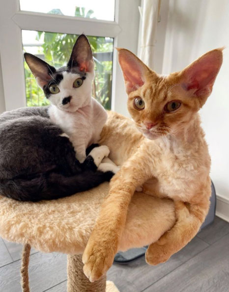
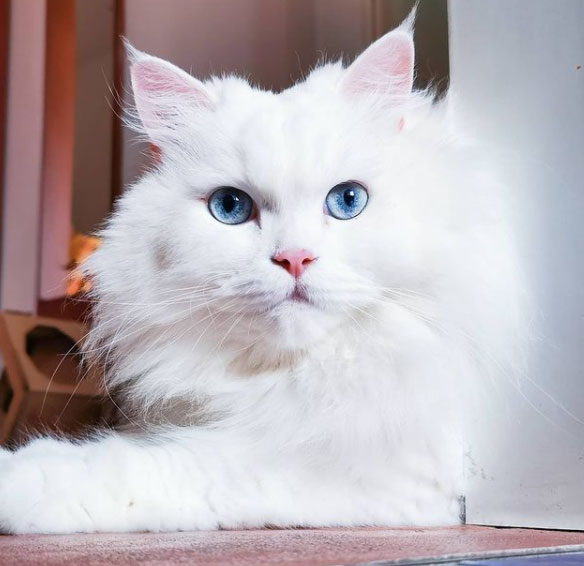
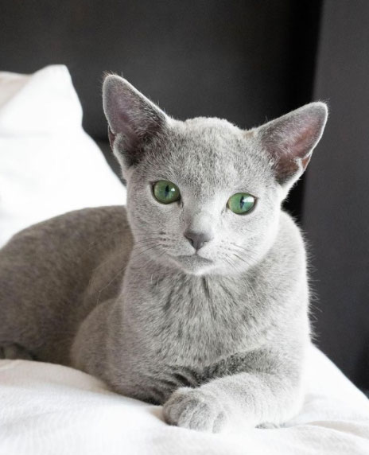
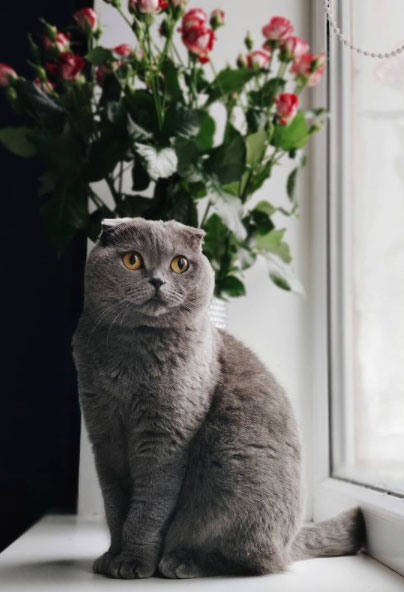
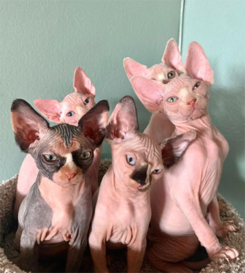
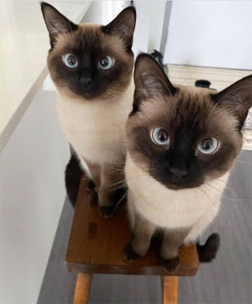
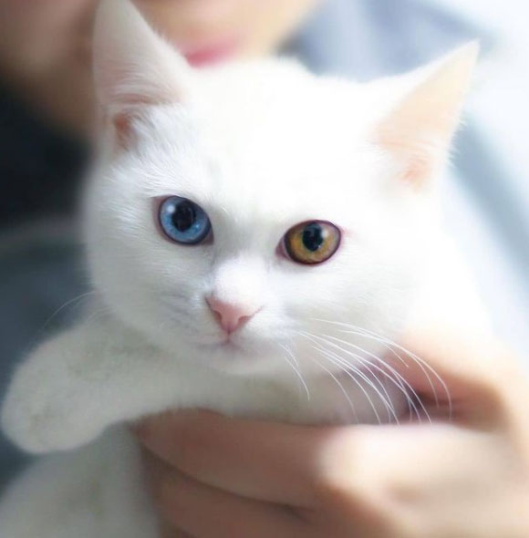

Kedi Çeşitleri
British Shorthair
 Bilinen en eski kedi ırklarından biri British Shorthair’ler. Adından da anlaşılabileceği gibi İngiliz
kökenli kabul edilen bu kedi türünün aslında Eski Mısır’dan geldiği; Romalılarla birlikte şimdiki
Britanya’ya taşındığı kabul ediliyor.
Bilinen en eski kedi ırklarından biri British Shorthair’ler. Adından da anlaşılabileceği gibi İngiliz
kökenli kabul edilen bu kedi türünün aslında Eski Mısır’dan geldiği; Romalılarla birlikte şimdiki
Britanya’ya taşındığı kabul ediliyor.
Yuvarlak yüz hatları, sık ve kısa tüyleri, mavi-gri rengi British Shorthair’lerin en ayırt edici özelliklerinden. Hareket etmeyi çok sevmedikleri için kolaylıkla kilo alabilen British Shorthair kedilerin düzenli olarak oyun oynatılması ve hareket ettirilmesi öneriliyor. Zeki ve arkadaş canlısı olan British Shorthair kediler çocuklarla da çok iyi anlaşabilen cinslerden.
Devon Rex
 Kemikli yüzü, atletik vücudu, kısa tüyleri ve kocaman kulaklarıyla tanınan Devon rex kedileri en enerjik kedi türlerinden birisi. Sürekli gezmeyi, atlamayı, hareketli oyunlar oynamayı seven bu kedilerin bakımında dikkat edilmesi gereken ilk nokta tüyleri çok hassas olduğu için asla taranmaması gerektiği.
Tüyleri o kadar hassastır ki bıyıkları bile kopabilir. Devon rex kedileri sıcak iklimi seven, soğuklarla arası iyi olmayan türlerden bir tanesi.
Exotic Shorthair
Amerikan shorthair ve İran kedisi kırması olan Exotic shorthair kedi cinsi tombul yanakları, minik burnu, kısa bacakları ve düz yüzüyle tanınıyor. Sahibine bağlı, sevecen ve uyumlu olan Exotic shorthair, diğer shorthair cinslerine göre (İran kedisi genleri baskın gelerek) çok daha hareketli kedilerden biri.
Öğretilenleri kolayca anlayan ve kuralları benimseyen exotic shorthair arkadaş canlısı karakteriyle de öne çıkıyor.
İran Kedisi
 Yuvarlak hatları, tüylü yapısı, basık yüzü ve ters kalp şeklindeki ağzı ile İran kedileri görünüşüyle en çok dikkat çeken kedi ırklarından bir tanesi. Sakin yapıya sahip olan İran kedileri beyaz, sarı ya da gri renkte olabiliyor.
Sahibine oldukça bağlı olan kediler ev yaşamını severler ve oldukça miskindirler. Miskin olsalar da iletişim kurmayı, oyun oynamayı severler. İran kedilerinin en sevdiği şey ise kesinlikle sessiz bir ortam. Sesli ya da kalabalık ortamlarda mutsuz olmaları ve saklanmaları bu cinsin en bilinen özelliklerinden.
Mavi Rus Kedisi
 Maviye dönük gri tüyleri nedeniyle bu ismi alan kedi türü adından da anlaşılabileceği gibi Rusya kökenli olarak tanınıyor. Diğer kedilere kıyasla iki kat daha sık olan tüyleri onları soğuk iklimlere daha dayanıklı yapıyor. Oyun oynamayı çok seven mavi Rus kedileri yabancılara karşı tepkili olabiliyor. Bir diğer özellikleri de hareket etmeyi sevmemeleri ve biraz inatçı olabilmeleri.
Sahibine düşkün olsalar da inatçı ve kendi kurallarını koyma özelliklerinden dolayı mavi Rus kedilerinde sık sık ev sınırları dışına çıkma ihtimali gündeme gelebiliyor. Eğer bir mavi Rus kediniz varsa evin her köşesinin ona açık olması gerektiğini ve kendi başına buyruk olacağı ihtimalini göz önüne almalısınız.
Munchkin
 Munchkinlerin renkleri, yüz şekilleri değişse de onları diğer kedi türlerinden ayıran en önemli özellikleri
kısa bacakları. Bacak boyu diğer kedilerin neredeyse yarısı uzunluğunda olan munchkinler fiziki özellikleri
gereği çok fazla hoplayıp zıplamasalar da hareket etmeyi severler.
Munchkinlerin renkleri, yüz şekilleri değişse de onları diğer kedi türlerinden ayıran en önemli özellikleri
kısa bacakları. Bacak boyu diğer kedilerin neredeyse yarısı uzunluğunda olan munchkinler fiziki özellikleri
gereği çok fazla hoplayıp zıplamasalar da hareket etmeyi severler.
Çok meraklı ve kuralları tanımaya açık karakterleri vardır. Sevecen ve sıcakkanlı oldukları için de eve gelen misafirlerle bile anlaşabilirler.
Scottish Fold
 Yumuşak tüyleri ve kıvrılmış kulaklarıyla tanınan Scottish Fold’ların belirgin özelliklerinden biri sahiplerine sıkı sıkıya bağlanmaları. Genel olarak hareket etmeyi çok sevmeyen, sakin ve uyumlu yapıdaki Scottish Fold kediler günün her anında evin tadını çıkaran cinslerden biri. Yavaş hareket etmeleri, sakin yapıları da bu kedilerin öne çıkan özelliklerinden. Beyaz, gri, siyah ve krem renklerde olan kediler yuvarlak hatlarıyla tanınırlar.
Kilo almaya yatkın olmaları nedeniyle uzmanlar Scottish Fold’ların beslenmesinde mutlaka bir veterinerden öneri alınarak mama seçilmesi gerektiğinin altını çiziyorlar.Scottish Fold’ların kulaklarının kıvrık olması aslında kıkırdaklarda oluşan genetik bir mutasyon. Kimikaynaklar bu cinsin 18’inci yüzyılın sonunda Güney Doğu Asya’da görüldüğünü söylese de kesin olarak bilinen 1960’lı yıllarda Britanya’da melezlenerek ortaya çıktığı.
Sfenks Kedisi
 Adından ve görünümünden dolayı Antik Mısır’ı hatırlatsa da Sfenks kedileri aslında Kanada kökenli bir cins. 1960’larda genetik bozuklukla doğan kedilerin genlerinin laboratuvar ortamında çoğaltılmasıyla yayılan Sfenks kedilerinin bir diğer adı da Kanada tüysüz kedisi. Hiç tüyü olmayan, kocaman kulakları ve üçgen yüzü olan kediler görünümlerinin aksine oldukça uyumlular. İnsanlarla çok iyi anlaşabildikleri için terapide kullanıldıkları bile oluyor.
Zeki, meraklı ve enerjik olan Sfenks kedileri tüysüz olmalarının dezavantajı olarak da düzenli bakıma ihtiyaç duyarlar. Düzenli olarak cildinin nemlendirilmesi, güneş ışığının zararlı etkilerine maruz kalmaması için krem kullanılması gerekiyor. Kalp hastalığı da Sfenks kedilerinde sık görülebilen bir durum.
Siyam Kedisi
 Siyah yüzü ve badem şekilli mavi gözleriyle Siyam kedileri, tüm cinsler arasında farklı bir güzelliğe sahip. Tayland kökenli kedilerin tapınaklarda 1400’lü yıllardan beri var oldukları bilinse de tanınmaları 19. yüzyılın sonunda hediye olarak İngiltere’ye gitmeleriyle başlıyor.
Üçgen şekilli yüzü, atletik yapısı olan Siyam kedileri ilk doğduklarında krem rengi oluyorlar. Zaman geçip büyüdükçe yüzü, kulakları, kuyruğu ve arka patileri koyulaşıyor. Siyam kedilerini diğer cinslerden farklılaştıran en büyük özellikleri de oldukça konuşkan olmaları. Çoğu Siyam kedisi sahibinden, kedileriyle adeta sohbet eder gibi konuştuklarını duymak yüksek bir ihtimal. Oldukça dost canlısı olan Siyam kedileri genel huy itibariyle de sakin ve dost canlısıdırlar.
Van Kedisi
 İki gözünün de farklı renkte olmasıyla ün yapan Van kedileri güzelliğiyle hayran bırakan kedi türlerinden biri. Sıklıkla bir gözü kehribar rengi diğer gözü mavi olarak dünyaya gelseler de bazı Van kedilerinin her iki gözü de aynı renk olabiliyor. Van kedilerini diğer cinsler arasında farklılaştıran bir diğer nokta da yumuşacık ve uzun tüyleri, neredeyse kendi bünyesi kadar olan kabarık kuyruğu.
Beyaz renkli tüyleriyle tanınan bu kedi türünde nadir de olsa sarı ya da turuncu renkli tüyler de görülebiliyor. Suyu seven hatta yüzebilen Van kedileri hakkındaki efsanelerden biri de bu özelliklerini suda avlanırken geliştirmiş olmaları. Oldukça hareketli olan Van kedileri, hareket alanları kısıtlanmadığı sürece ev yaşamını severler. Sevilmekten, kucağa kıvrılmaktan ve oyun oynamaktan oldukça hoşlanırlar. Çok zeki ve sadık oldukları için de hızlıca ev kurallarını öğrenir ve verilen eğitimi de alırlar. Özel bir bakıma ya da beslenme rutinine ihtiyaç duymazlar.